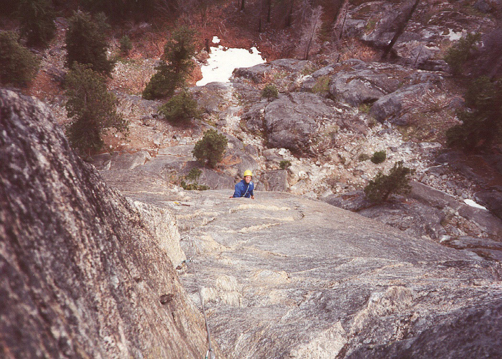
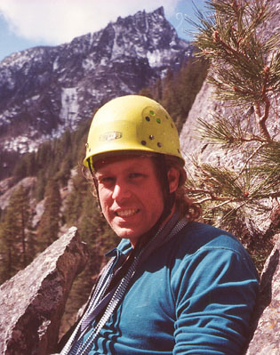

Snow Creek Wall, Orbit
- Orbit (Grade III, 5.8, 6 pitches)
- April, 2001
Daniel Smith and I planned this climb a few weeks before. Amazingly, nothing came up to knock us off course. We drove over Steven’s Pass in rain turning to snow, discussing climbs we had done and wanted to do. Any non-climber would be bored to tears. We reached the Snow Creek Trail parking lot at 9 am, and were espied by Ray Borbon, ensconced on the ridge across the street. He came down and wished us luck.


I had a new pack, a “crag pack,” I guess. Very small! But it held our rack, some water, my harness, shoes and a jacket, so it was adequate. Dan had a real pack, and soon we were hiking up to the wall, pretty happy with life and the weather thus far. The log crossing was an awkward awakening from mindless hiking. Once at the base of the rock, we scrambled around looking for the first pitch. Dan found the 3rd class route. We changed into rock gear and stowed the packs in a tree. Dan suggested scrambling the first pitch, which was a good idea. There was just one tricky move just before the tree belay, but with a little thought it felt secure.
Now for the real climbing! Dan wanted to give me the “crux” pitch, so it worked out that I should do the first one too, which starts with a tricky chimney. I got some pro in the back wall of the chimney, and wondered what to do next. Dan suggested climbing onto the face rather than stemming or thrutching in the chimney. This worked marvelously, and soon I was on easy ground, climbing an obvious leftward ramp. I continued on the ramp to a small tree belay where the climbing looked harder. Dan came up quickly, grabbed the gear and headed up for the 5.8 crack pitch. Dan said I was a better rock climber than he expected, and my pro was good. This bloated my head sufficiently that the rest of the route was a piece of cake! Anyway, Dan and I have exchanged email for months, it was great to finally climb.
Due to rope drag, and not being able to communicate around the corner very well, I kept Dan tight on the rope when he wanted to down-climb a small section. “Take” and “Slack” can sound too much alike on a windy day. I think the “Up Rope!” convention is better, and will start saying that instead. Aside from that, it was a great pitch, and a great lead. Dan had some good pro in at the start of the crack, then harder climbing continued up and finally leftward to join a crack on the left. Now we were getting a taste of this great route!
With a little apprehension, I geared up for the next lead. Running out of excuses to stand around at the belay, I moved up a tricky face to two bolts. Above the bolts was a horizontal crack before a mysterious corner that I’d have to go around. The crack took two thin wires, and sweating a little, I edged around the corner to find…easier climbing! I headed up, zigging this way and that among flakes and edges. There was a fixed pin and an old bolt along the way. With Dan out of sight around the corner, this pitch had a long and lonely feel. I came to two old bolts and wondered if I should belay here. Finally I went 15 feet higher to an awkward ledge with a loose block. Two cams and a hex made the semi-hanging belay. “Wow,” I mentally said. The exposure was great. When Dan came around the corner, I had a good time watching him discover the next moves just as I had. From above, all these little ledges are very clear, but from below you have to feel them out. I got a picture of Dan here.
Dan headed up the left-facing dihedral I belayed in. There was some tough climbing here, and not so great pro as he moved around a corner to find…easier climbing! At least long enough to get some gear. Then he headed up to a roof, looked for another way around, then committed to the roof. This seemed like a fun pitch. Of course, I hadn’t brought a jacket, and the steady wind finally had me almost shivering. I flexed muscles to stay warm. Dan put me on belay and I started up. While cleaning the second cam, my foot slipped and I fell onto the rope. Nice belay, Dan! There was a lot of air beneath me. The cold had made me clumsy, but I think the fall sent a lot of blood to my skin! So I went up and around the corner, over the overhang, and up some fun knobs and overlaps. The belay was just below and right of a large overhang. Dan sent me off right away for a chickenhead fest.
Long did I wander in the valley of the bodiless chickens. Around a corner (a common theme), I grappled with these lifeless heads by the dozen. I considered slinging their necks with cordage, but their reassuring grip in the hand provided enough security. I came to a ledge and continued up and left on the lichen-stained orbs, an eerie soundtrack playing in my head. With a lot of rope drag, I reached a ledge protected from the wind, placed a cam to back up my belay seat, and enjoyed the view while Dan zoomed up. The view started to include snow. Lots of snow. Dan arrived and set off on the final scramble to the summit. By the time I got moving, the rock was becoming slick and thoughts of an unpleasant, snowy descent were stewing in my brain. I enjoyed a slot canyon with pine needles on the floor, and a bouldering move by a tree to escape. Dan, wearing shorts, was crouching in an alcove to get away from the snow. He coiled the rope for descent, and after waiting a few minutes, we headed down. I was really picturing these scary “no fall allowed” scenarios on slippery slabs with blue, frozen feet. I kept thinking we would want to rappel. But my fears were groundless. Even with some snow, the descent wasn’t as bad as I remembered it. Dan told me about the advantages and disadvantages of being single. I also learned about the attempt he made on Johannesburg this winter, climbing 2000 feet of water ice 3 and 4. This sounded like an amazing adventure. I think there is a war in many climber’s minds between checking a tick list, and bold adventure. I know I have this. Do something obscure…but probably more likely to end in brush and rain? Or something classic…great climbing, but often a non-wilderness experience due to all the other people, and guidebook that leads you through every pitch? Well, chalk one up for Adventure on that trip.
Back at the base, we chatted with other climbers who had done Outer Space. Strings of climbers seemed to be rappelling from that route and others, due to the snow. But already, the rock was drying and the sun was shining. We hiked out. The log crossing was easy going back.
At the car, Ray left a note, hoping the rain didn’t skunk us. Nope!
We drove to Classic Crack, met two guys from Marmot, Jody and Pat. They climbed it, then I belayed Dan, who led this quickly and easily. He had to deal with a weird inverted cam problem placing the second or third piece, right at the crux! Dan came down, and I immediately fell off the route on top-rope. Another try from the base proved successful, and I enjoying the jamming immensely. I had come the year before and top-roped this route, lie-backing until my lungs felt like bursting. Naturally, I wondered how I could ever lead it. Now that I can jam, I’m ready to give it a try.
We had a beer at Gustav’s with Jody and Pat, hearing a great story about a dehydrated climber on Adams who thought the rescue helicopter was a UFO. He successfully hid from it for at least a day. Then, we got a fascinating lecture on the “Tree Route,” with info on accessing the upper three pitches which aren’t in the guidebook. (Ma’am, if you read this, send me that info…I was sad that I couldn’t stay for the full route description you had.) On that happy note, we drove back.
Thanks to Dan for a great climbing day!